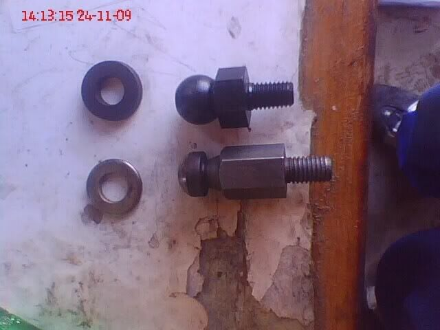

-
Anyone seen one of these before? It says it's for the RB20/VG20ET. Couldn't find any info on the RB, but according to Xenon the VG20ET came with a 71C. Any idea if this would work in our 71C? Has anyone tried it?
http://www.auction-jp.com/item/c378117064/Prius… because Pretentious wouldn't fit across the back of the car…
Cheap, Fast, Reliable - pick any two
My 1986 Turbo Build -
it should! good find. -
The one from zspeedperformance also works.the one that is available with the heavy duty clutch fork."If your car cant do a burnout from a 60mph rolling start, then your engine needs more work."
"Nitrous doesn't blow up motors; Idiots with nitrous blow up motors."
Shooting for 500whp

-
Doesn't work with the 71c, 30a only.85NA2T;327774 wrote: The one from zspeedperformance also works.the one that is available with the heavy duty clutch fork.Prius… because Pretentious wouldn't fit across the back of the car…
Cheap, Fast, Reliable - pick any two
My 1986 Turbo Build -
Doing a quick Google of the Nismo part number from the add, 30537-RS540, it is the same part number for the s13/s14/r31 etc, all 71c transmissions I believe, so it should work. It also lists the length at 41mm, which should be easy to check and match with a stock pivot ball.
Also found the Nismo 30a tranmission pivot ball part number to be 30537-RS581, it lists r32/r33/r34/z32 as compatible vehicles. -
I'm running one as we speak.not the fork obviously.did you try it and have issues?jaqattack02;327816 wrote: Doesn't work with the 71c, 30a only."If your car cant do a burnout from a 60mph rolling start, then your engine needs more work."
"Nitrous doesn't blow up motors; Idiots with nitrous blow up motors."
Shooting for 500whp
-
You're the first person I've seen say it works. Everyone else I've seen who tried it had problems.85NA2T;327906 wrote: I'm running one as we speak.not the fork obviously.did you try it and have issues?Prius… because Pretentious wouldn't fit across the back of the car…
Cheap, Fast, Reliable - pick any two
My 1986 Turbo Build -
Hmmm thats odd.I know the fork wont work but my pivot was the same? Idkjaqattack02;327943 wrote: You're the first person I've seen say it works. Everyone else I've seen who tried it had problems."If your car cant do a burnout from a 60mph rolling start, then your engine needs more work."
"Nitrous doesn't blow up motors; Idiots with nitrous blow up motors."
Shooting for 500whp
-
I'm not at a point of needing one yet anyway. I was just posting it in case someone else did since I didn't know NISMO made one.Prius… because Pretentious wouldn't fit across the back of the car…
Cheap, Fast, Reliable - pick any two
My 1986 Turbo Build -
The reason being is that the fork upgrade needs a shorter pivot ball to work. It seems that Nissan used a shorter pivot ball for the 71c transmissions and 2004+ 350z. A longer one was used for the 30a and 2003 350z transmissions.85NA2T;327956 wrote: Hmmm thats odd.I know the fork wont work but my pivot was the same? Idk
Pic I found:

This pdf about the Nismo pivot balls shows the short to be 41mm long vs the long ones 54mm:
http://www.nismo.co.jp/en/products/c…/pdf/pivot.pdf

Copyright © 2006–. All rights reserved. Privacy Policy